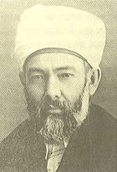

Elmalýlý Muhammed Hamdi Yazýr (1878-1942)

Cumhuriyet dönemine yetiþmiþ son dönem Osmanlý ulemasýndandýr. Yazdýðý Kur'an-ý Kerim tefsiri ile önemli bir üne kavuþmuþtur. Memleketinden ötürü "Elmalýlý" olarak anýlmýþ, soyadý kanunu çýktýktan sonra da "Yazýr" soyadýný almýþtýr. Soyadý olarak babasýnýn köyünün ismini seçmiþtir. Ýstanbul'a geldikten sonra eðitimini sürdürmüþ, mezuniyetten sonra hocalýk yapmýþtýr. Meþrutiyetin yeniden tesisinden sonra Antalya mebusu olarak Meclise girmiþ ve bir süre vakýflar sorumlu bakanlýk yapmýþtýr. Bediüzzaman Said Nursi, Mehmed Akif gibi meþhur simalarýn üyesi olduðu Darü'l-Hikmeti'l-Ýslamiye'de görev yapmýþ ve daha sonra bu kurumun baþkanlýðýna getirilmiþtir. Meþhur eseri olan Elmalýlý Tefsiri'ni 1938 yýlýnda tamamlamýþtýr.Muhammed, Antalya'nýn Elmalý ilçesinde doðdu. Aslen Burdur'lu olan babasý Numan Efendi Elmalý Þeriyye Mahkemesinde katiplik yaptý. Annesinin adý Fatma Hanýmdýr. Ýlk ve orta öðrenimini doðduðu ilçede yaptý. Okul eðitimi ile birlikte hafýzlýk eðitimini de görerek Kur'an-ý Kerim'i ezberledi ve hafýz oldu.
Muhammed, eðitim maksadýyla, dayýsýyla birlikte Ýstanbul'a gitti. Küçük Ayasofya Medresesine yerleþtikten sonra Bayezit'teki derslere devam etti. Eðitimini tamamladýktan sonra icazetini Kayserili Mahmut Hamdi Efendiden alarak mezun oldu. Bu tarihten sonra hocasýyla ayný ismi taþýmalarýndan ötürü hocasý "büyük Hamdi", kendisi de "Küçük Hamdi" olarak anýlmaya baþlandý. Bu lakabý benimseyerek yazýlarýný bu lakapla imzaladý. Eðitimi sýrasýnda hat sanatýna da ilgi duyduðundan bu alanda da önemli bir eðitim alarak kendini geliþtirdi.
Muhammed Hamdi, 1904 yýlýnda, devlet görevi için girdiði sýnavý kazandý. Akabinde Bayezit Medresesinde hocalýk yapmaya baþladý. Fikri karmaþanýn olduðu bu dönemde Meþrutiyet sisteminden yana tavýr takýndý. Ýttihat ve Terakki'ye yakýnlýk göstererek cemiyetin ilmiye kýsmýna üye oldu. Meþrutiyet idaresinin yeniden yürürlüðe girmesi ile Meclis açýldý. Kendisi de Antalya milletvekili olarak Meclise girdi.
Sultan Abdülhamid'in tahttan indirilmesine razý olmayan ve fetva yazmaya yanaþmayan Nuri Efendi'yi ikna etti. Fetvanýn müsveddesini bizzat kendisi hazýrladý. Böylece tahttan indirilme iþinde aktif rol aldý. Bu faaliyetinden ötürü senelerce ýzdýrap çektiði ifade edilmektedir. (Sadýk Albayrak, Son Devrin Ýslam Akademisi Dar-ül Hikmet-il Ýslamiye, YAY., 2. Baský, Ýstanbul 1973, s. 177) Þeyhülislamlýk makamýnýn katipliðinde bulunduðu gibi hocalýk görevini de sürdürdü. Deðiþik medreselerde fýkýh, usul-ý fýkýh, mantýk, vakýf hukuku gibi derslerin hocalýðýný yaptý.
25 Aðustos 1918 tarihinde bir Ýslam Akademisi olan Darü'l-Hikmeti'l-Ýslamiyye kuruldu. Kuruluþ amacý; Ýslam Aleminde ortaya çýkan yeni meselelere çözüm bulmak ve Ýslam'a yönelen hücumlara karþý Ýslam hükümlerine göre cevap vermekti. Bunun yanýnda halký aydýnlatmak için basýn ve yayýn yoluyla faaliyette bulunmak ve yayýn yapmak amacý da vardý. Yabancýlarýn sorduðu sorular, teþkil edilen komisyonlarda görüþülmek suretiyle cevaplar hazýrlanmaktaydý. Þeyhülislamlýk bünyesinde kurulan bu kuruma dönemin ünlü simalarý tayin edildi. Bediüzzaman Said Nursi ve Muhammed Hamdi Efendi de seçilen ünlü simalar arasýndaydý.
Muhammed Hamdi, bir süre sonra tayin edildiði bu kurumun baþýna getirildi. Damat Ferit Paþa tarafýndan ilk defa kurulan kabineye Evkaf Nazýrý olarak dahil oldu. Bu görevde bulunduðu sýrada ikinci rütbeden Osmanlý niþaný ile taltif edildi. Ayrýca ilmiye rütbesinde de kademe kat ederek Süleymaniye Medresesi Müderrisliðine yükseltildi. Milli Mücadele sýrasýnda Ýstanbul hükümetinde görev aldýðýndan ötürü gýyabýnda idam cezasýna çarptýrýldý. Ýstanbul'dan Ankara'ya götürüldü ve kýrk gün boyunca tutuklu kaldý.
Elmalýlý, serbest kaldýktan sonra Ýstanbul'a döndü. Fatih'teki evinden, camiye gitme dýþýnda, hiç dýþarý çýkmadý. Türkiye Büyük Millet Meclisinden Türkçe Tefsir hazýrlanmasý kararý çýktýktan sonra Diyanet Ýþleri Baþkanlýðý bu görevi kendisine teklif edince kabul etti ve Türkçe tefsir yazmaya baþladý. Hak Dini Kur'an Dili adýyla yayýnlanan eserini 1938 yýlýnda tamamladý. Fihrist dahil dokuz ciltten müteþekkil eseri kendisine önemli bir ün kazandýrdý. Uzun zamandan beri devam edegelen kalp yetmezliðinden ötürü 27 Mayýs 1942 tarihinde vefat etti. Naaþý Sahrayýcedid Mezarlýðýna defnedildi.
Önemli bir birikim ve kültüre sahip olan Muhammed Hamdi, Türkçe'nin yanýnda Arapça ve Farsça ile þiir yazacak kadar üst seviyede bir bilgiye sahipti. Yazýlarýnda sade bir Türkçe kullanmaya gayret gösterdi. Bu arada baþka dillerden geçen ve Türkçe'nin kimliðine bürünen kelimeleri de görmezden gelmedi. Bunlarý da kullandý. Ancak, ilmi ve dini konularla ilgili yazýlarýnda daha aðýr bir dil kullandýðý görülmektedir. Sanatçý bir kiþiliðe de sahip olan Yazýr, hat sanatý dalýnda da önemli eserler býraktý. Sülüs, nesih, talik, celi türlerinde bir çok levha yazdý.
Ýkinci Meþrutiyet döneminde fikirleriyle Ýslami deðerleri müdafaa etti. Milleti Avrupalýlaþtýrmanýn hata olduðunu dile getirdi. Avrupa'nýn deðerlerini deðil, ilmini almamýz gerektiðini, dini hassasiyetlerden hareketle ilmi geliþme ve fikirlere karþý gelinmemesi tezini savundu.
Muhammed Hamdi'ye göre Kur'an-ý Kerim'i hakkýyla tercüme etmek mümkün deðildi. Tefsir için Arapça'nýn inceliklerine sahip olmak gerektiði gibi Kur'an ifadeleri hakkýnda da çok büyük bir bilgiye sahip olmak gerekir. Tefsirler ve ileri sürülen tezlerin tümünü kabul veya ret yaklaþýmýndan uzak durulmasý gereðini savundu. Tefsirinde aktardýðý görüþlerin bazýlarýna katýldýðý gibi bazýlarýný da eleþtirmekten kaçýnmadý. Fýkhi konularda sadece Hanefi kaynaklarýna yer verdi.
Önemli bir süre felsefe ile de ilgilenen Yazýr, Batýlý yazarlarýn bazý eserlerini tercüme etti. Bu eserlerde ileri sürülen nazariyelere eleþtirel yaklaþým sergiledi. Felsefe ve din arasýnda cereyan eden münazaraya çözüm bulmaya çalýþtý. Filozoflarýn gerçeði kavrayamadýklarýný belirtti. Ona göre akýl tek baþýna gerçeði kavramak için yeterli deðildir. Akýl iman ile bütünleþtiði zaman gerçeði kavrayýp doðrulayabilir. Ýnsan aklý bütün ilimlerin esasýný teþkil eden illiyet kanununa uygun bir þekilde kullanýlmalýdýr. Bu yolla Allah'ýn varlýðýna ulaþýlabilir. Kâinatta mevcut olan ve insanlarý hayrete düþüren sanat eserinin yanýnda canlý ve cansýz varlýklar da Allah'ýn varlýðýna delil teþkil etmektedir.
Muhammed Hamdi, kýyamet alametlerinden sayýlan Yecüc ve Mecüc'ü; nesebi belli olmayan, din ve millet tanýmayan bir topluluk olarak yorumlar. Deccal'ý da uluhiyet iddiasýyla ortaya çýkacak bir yalancý olarak tasvir eder. Allah'ý inkar eden kafirlerin bu fiilleriyle ebedi bir kötülük yaptýklarýný ve bu yüzden de ebediyen Allah'ýn rahmetinden uzak kalacaðýný belirtir.
En büyük eseri olan ve "Hak Dini Kur'an Dili" adlý eserini on iki yýlda tamamladý. Ýlk baskýsý Diyanet Ýþleri Baþkanlýðý tarafýndan yapýldýktan sonra, birçok baskýsý daha yapýldý. Bunun dýþýnda Hz. Muhammed'in Dini Ýslam, Ýrþadü'l-ahlaf fi ahkami'l-evkaf, Metalib ve Mezahib, Ýstintaci ve Ýstikra-i Mantýk adýný taþýyan eserleri de kaleme aldý.